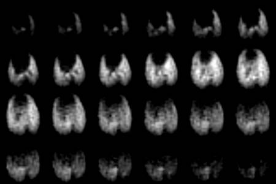

Fluorinated Gases in Lungs are more like Solids than Liquids
Dear Dr. Shapiro:
We have been having some fun and frustration lately making images of rat lungs by having the rats breath a mixture of an inert fluorinated gas (C2F6 or SF6) and 02, and then imaging the fluorinated gas. Unlike our colleagues who image polarized noble gases, we are imaging the fluorine at its thermal equilibrium polarization. The trick that makes this seemingly preposterous method work is to take advantage of the short T1s (1 to 3 ms) of these gases. We can signal average very rapidly, collecting up to 200 FIDs during the 40% of one breath cycle when the lungs are most inflated. As you might imagine there isn't much time for switching imaging gradients, so we don't. We do projection imaging, leaving a magnetic field gradient on in a given direction while we repeatedly excite with hard pulses and collect the ensuing FIDs.
With this imaging method and short T2s, the desirable characteristics for the receiver chain are similar to those for imaging solids. In particular, we want to collect data soon after the hard rf pulses. A long dead time forces us to keep imaging gradient strengths weak so that the first k coordinates are not too large. Weak gradients in turn require long data collection times, which are incompatible with short T2s· In short, the signal is decaying fast and the early k-space points are valuable. The analogy to solids NMR was especially impressed upon us when we discovered that in an early version of our probe, we were getting substantial interfering 19F signal from the Teflon® in the variable capacitors. We moved the offending Teflon® further from the business part of the coil with great improvement. Subsequent progress came more slowly. Our imager was designed for imaging liquid-like stuff not this solid-like gas! Despite a long dead time (80 m s) we managed to obtain a good lung image, in which we could see small objects like the trachea, bronchi, aorta, vena cava, and esophagus. The hitch is that the data took 4.3 hours to collect.
During a discussion of our dead time problems with Irving Lowe, he kindly offered that I (DOK) make a trip to Pittsburgh to try imaging lungs with his system, which still contains the rf section he built nearly 25 years ago. Irv's graduate student, Michael Gach kindly put himself at my service for 2 weeks. I strongly recommend the eddy current pre-emphasis system that Irv and Arvind developed. Mike and I managed to precompensate the set of unshielded gradient coils we used to image lungs in three days! Having not learned what NMR was until 1987, I found Irv's rf section delightfully quaint, using rf trombones, cables, and knobs to adjust things I am used to adjusting with computer commands. The upshot was that the dead time was 10 m s, and we were able to make a 3D image of rat lungs (next page) with only 32 minutes of data collection.

Figure. Twenty four consecutive axial planes of a three-dimensional image of SF6 in rat lungs from anterior (top left) to posterior (bottom right) made after 34 minutes of data collection. The central spot in first three frames is the trachea, which divides into two bronchi (frames 5 and 6). The dark spot in the third row is the vena cava. The heart and mediastinum are the dark area separating the smaller left lung from the larger right in the first and second rows. The broad dark area in the bottom two rows is the diaphragm and liver.
Happy winter solstice to all,
Dean O. Kuethe, Arvind Caprihan, Eiichi Fukushima, f H. Michael Gach, Irving J. Lowe